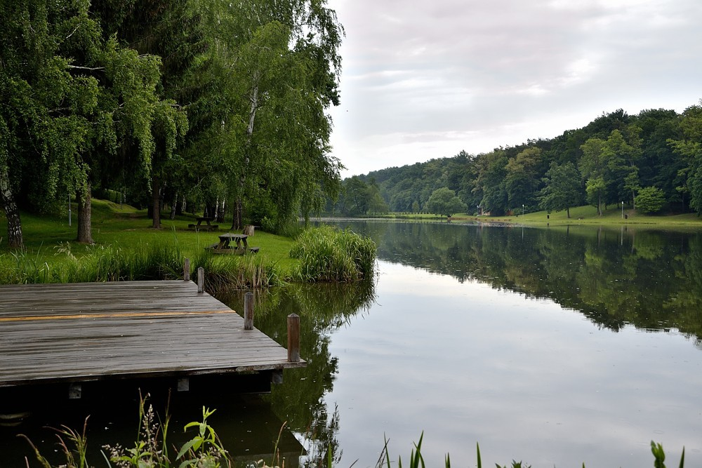
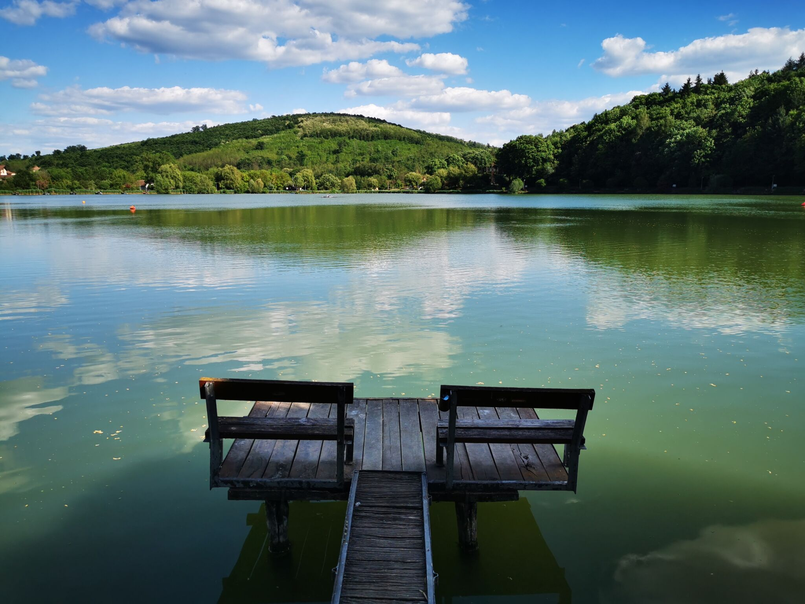

Tisza-tó
Az ország legnagyobb mesterséges tava tele kalandokkal. A Kiskörei víztározó, vagy ahogy legtöbben ismerjük, a Tisza-tó egyre inkább kedvelt úti céllá válik, mert az idelátogatókra egyre több kaland vár.

Vadása-tó
A Vadása-tó egy valójában két tóból álló mesterséges tóegyüttes neve Vas megye déli részén, az Őrségben. Kedvelt üdülő- és horgászhely.
Pécsi-tó
Orfű városában található a Pécsi-tó, mely az orfűi tórendszerhez tartozik és a legnagyobb tavát alkotja. A tavat teljes mértékben mesterségesen hozták létre, mégpedig 1966-ban. Elhelyezkedését tekintve az északi oldalán terül el a Mecseknek, melynek területe 72 hektár. A csodás szépségű tó és területe országosan kedvelt üdülő- és horgászhely.

Bánki-tó
Palócföld legismertebb üdülőhelye a Cserhát és a Börzsöny határán fekvő hangulatos Bánki-tó, a palóc Balaton. A Bánk falu területén fekvő 7 hektáros, a Jenői-patak felduzzasztásával létrehozott, átlagosan 4 méter mély tó közkedvelt kiránduló- és üdülőhely. A víz elsősorban horgászparadicsom, de a nyári hónapokban a tó falu felé eső részén létesített, rendezett strand rendkívül népszerű a fürdőzni, napozni vágyók körében.
